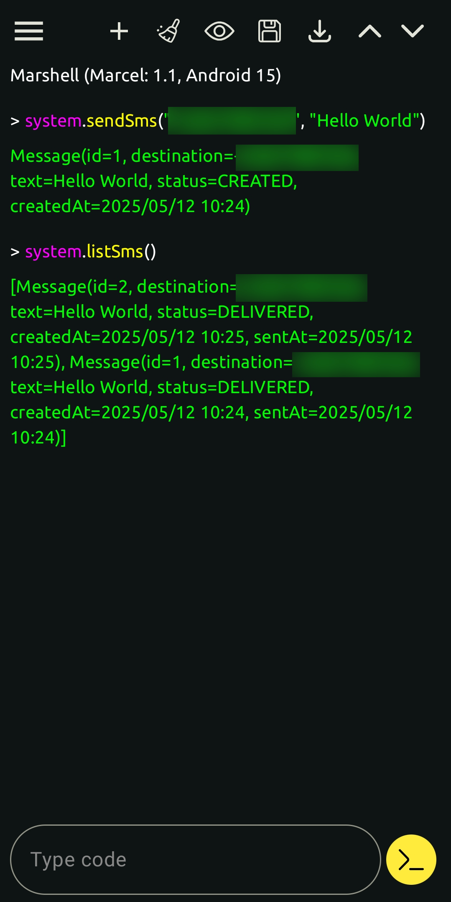

Marcel, a simple and efficient programming language for any JVM
Marcel is a programming language built with the following goals in mind:
- Being simple, not too verbose, allowing to write programs quickly
- Runnable on Android devices (this language is guaranteed to be compilable and executable on Android devices)
Its features are inspired from many languages such as Groovy, Kotlin, Perl and Dart. You can consult the source code of this language on GitHub
Marcel compiles to Java bytecode (.class files). You can execute marcel script/projects on any JVMs (17+), as long as the Marcel stdlib is included in your classpath.
As stated above, marcel is guaranteed to be compilable and executable on any Android devices running on Android 11 or +. You can install the Marcel for Android app to develop, compile and execute Marcel programs.
Getting Started
In this section we'll discuss:
- Installing Marcel
- Writing and running a Marcel program that prints
Hello World
Installation
Marcel comes with
Install from release
Using the script
You can run the below command in order to install a Marcel release in a specific directory.
curl -s https://raw.githubusercontent.com/tambapps/marcel/main/install/install-from-release.sh | bash -s
It will install Marcel in the $HOME/.marcel folder.
You can also specify a directory by passing it as an argument as shown below
# Will install in ./my-folder
curl -s https://raw.githubusercontent.com/tambapps/marcel/main/install/install-from-release.sh | bash -s ./my-folder
Downloading the release
You can download the release.zip of a Marcel Release. Unzip it where you want.
Set MARCEL_HOME
Set the MARCEL_HOME environment to the path of the release you just unzipped. You can set it in your .bashrc or .zshrc so that
this variable is set in all your sessions.
You can also add $MARCEL_HOME/bin to your PATH so your shell recognize marcel commands.
Install from source code
There is a script in marcel repository for that.
Note that this script only works on Linux and Mac and requires Maven being installed.
git clone https://github.com/tambapps/marcel.git
cd marcel
./install/install-from-source.sh
Prerequisites
You'll need Maven for the installation.
Run script
Clone the repository
git clone https://github.com/tambapps/marcel.git
cd marcel
And then run the script
./install-from-source.sh
The script basically runs a lot of mvn clean package and then copy/create some files in $HOME/.marcel/.
Lastly, you can add the following lines into your $HOME/.bashrc (or $HOME/.zshrc or whatever) to easily use marcel tools
MARCEL_HOME="$HOME/.marcel"
PATH="$PATH:$MARCEL_HOME/bin"
Hello World
Let's dive in some code now. Marcel can be used as a scripting language, so you don't need to declare a main() function
if you just want to run some code.
// HelloWorld.mcl
println("Hello World!")
That's it! One line is all it takes to write the famous Hello World program.
To execute it, use marcl.
marcl HelloWorld.mcl
Language Specification
In this section, you'll learn all the little secrets of MarcelLang.
Syntax
This chapter covers the syntax of the Marcel programming language.
Keywords
Marcel has the following keywords, which you cannot use as variable/function/fields names
- async
- int
- dynobj
- do
- long
- short
- float
- double
- bool
- byte
- void
- char
- fun
- return
- true
- false
- new
- import
- as
- inline
- static
- for
- in
- if
- else
- null
- break
- continue
- def
- class
- extension
- package
- extends
- implements
- final
- switch
- when
- this
- super
- dumbbell
- try
- catch
- finally
- instanceof
- throw
- throws
- constructor
- public
- protected
- internal
- private
- while
Comments
You can comment your code in Marcel the same way you would in Java.
Define comments like you would in Java. // ... for a single line comment, and /* ... */ for a multi-line comment
// this function does stuff
doStuff()
/* this function
does some
other stuff
*/
doOtherStuff()
Identifiers
An identifier is a name that you can use to define a class, field, a function or variable.
An identifier must follows all the below rules
- it must start with a letter ('a' to 'z' , and 'A' to 'Z'), or an underscore
- the following characters can be a letter, an underscore or a number
Class identifiers
To reference a class, you need tp add the .class suffix, like in Java.
But note that you can only reference simple name of classes, this means that you need to import it first.
import java.util.concurrent.Callable
println(Callable.class)
println(Object.class)
Variables
Declare variables
Marcel variable declarations are the same as Java's
int a = 2
Object o = new Object()
List<int> l = [1, 2] // collection of primivites
Multiple declarations
Marcel supports multiple assignments in one statement
def (int a, String b, Object c) = [1, "2", new Object()]
def (int d, String e, Object f) = functionReturningAnArrayOrList()
Note that if the array/list is shorter than the number of variable declared, this will lead to a runtime error
Sometimes you might want to ignore a specific item of a list,
You can use the _ identifier to let the compiler know that.
E.g.
def (_, String world) = ("hello world" =~ /hello (world)/).groups()
Variable assignments
Just use = to assign values to defined variables
int a = 2
a = 3
Properties
Marcel allows to access getters and setters as properties.
Suppose you have the below class
class Foo {
private int bar
fun getBar() {
return this.@bar
}
fun setBar(int bar) {
this.@bar = bar
}
}
You could call these getBar/setBar methods using the property syntax.
The @bar notation is the direct field access operator, make sure to reference the Java class's field.
Foo foo = new Foo()
foo.bar = 5 // will actully call foo.setBar(5)
println(foo.bar) // will actually call foo.getBar()
Automatic casting
Variable assignments are automatically casted when needed.
Optional o = Optional.of(123)
Integer myInteger = o.get() // returns Object cast into an Integer
int myInt = o.get() // returns Object cast into an Integer then into an int
This can be useful as Marcel doesn't support generic types.
Types
In this section we'll explore some common Marcel types.
Java Types
Marcel is a JVM language, therefore you can use any classes defined in the JDK.
Generic Types
Marcel doesn't support generic types except for collections of primitive (which technically aren't really generic). You can use generic classes but cannot specify generic types when using them. it's a conscious choice made to get rid of some complexity while developing the compiler and also because Java always casts at runtime anyway.
Primitives
Marcel supports the following Java primitives
- void
- boolean (bool)
- byte
- short
- int
- long
- float
- double
- char
- byte
Literal Numbers
Marcel supports almost all Java primitives. The number primitive literals are the same as in Java
// primitive types
byte b = 1
short s = 2
int i = 3
long l = 4l
float f = 5f
double d = 6d
Binary representation
You can also create numbers using their binary representation with the 0b prefix
int i = 0b10
long l = 0b11l
Hexadecimal representation
You can also create numbers using their hexadecimal representation with the 0x prefix
int i = 0x5
long l = 0x5l
boolean
You can create booleans using the true or false keyword.
bool b = true
char
Use the backtick (`) to create primitive characters.
Only one character must be specified between the two backticks
char c = `A`
Escaped characters
Use backslash to escape 'special' characters within strings/characters. Here is the list of escaped characters
| escaped character | represented value |
|---|---|
| \b | backspace |
| \n | newline |
| \r | carriage return |
| \t | tabulation |
| \\ | backslash |
| \' | single quotes (useful in simple strings) |
| \" | double quotes (useful in interpolated strings) |
| \` | backtick (useful in character strings) |
Objects
Any non-null value that is not a primitive is an Object.
As specified before, Marcel is a JVM language, therefore you can use any classes defined in the JDK.
You can also define classes in Marcel
String
The Java String as you know it. There are different ways to create strings in Marcel
Simple strings
You can use the single quote character (') to create strings
'Hello world!'
Interpolated strings
You can use the double quote character (") to create strings resolving variables
"$firstName $lastName is $age years old"
If you need to access a property, use the brackets
"${person.firstName} ${person.lastName} is ${person.age} years old"
Pattern strings
You can instantiate Patterns using backslash strings. These strings are reserved for pattern only.
The backslash is not considered as an escape, except for the backlash character
(which would be escaped as \/).
r/some \w+/
Note that such strings doesn't resolve variables. If you want to construct a Pattern while resolving Strings, you could
just call the Pattern.compile(String) method with an interpolated string.
It is good practise to end such regexes with a semi-colon (;) character, to make it clear to the compiler that what follows
is not a regex flag (we'll talk about that just after) but a 'real' identifier.
E.g.
Pattern pattern = r/myPattern/; // without the semi-colon, Marcel would think that 'println' characters are regex flags
println(pattern)
Pattern flags
You can also specify flags by adding a suffix at the end of your regex String.
Pattern pattern = r/myPattern/iu; // you can specify many flags at once
println(pattern)
Here is the list of flags (you can see the doc of each flag in the Javadoc of the Pattern's class).
| character | Java PatternFlag |
|---|---|
| d | UNIX_LINES |
| i | CASE_INSENSITIVE |
| x | COMMENTS |
| m | MULTILINE |
| l | LITERAL |
| s | DOTALL |
| u | UNICODE_CASE |
| c | CANON_EQ |
| U | UNICODE_CHARACTER_CLASS |
Arrays
Marcel supports Java arrays and has a syntax to specify array values.
Create arrays with the square brackets.
int[] ints = [1, 2, 3, 4]
Note that you can also use this syntax to create collections.
Collections
TODO
Collections of Primitives
Marcel allows to use collections with primitive elements. Such collections will not box all your primitives into their related Object class (e.g. store an int into an Integer). The elements will be stored in an array of primitives.
Iterating over such collections will only use primitives, no (un)boxing will be done.
Let's learn by example
Lists
List<int> list = [1, 2, 3, 4]
println(list[1])
list[1] = 1
println(list[1])
Here, we're declaring a List<int>. This type isn't actually generic, it is in fact an IntList (you can see this class in the marcel stdlib), and the
literal array will be converted into a IntArrayList (a int list that store elements in an int array).
Here is the list of all list of primitives supported
- List<int> -> IntList
- List<long> -> LongList
- List<float> -> FloatList
- List<double> -> DoubleList
- List<char> -> CharacterList
Sets
You can do the same with sets
Set<int> mySet = [1, 2, 3, 3] // will actually contain just 1, 2 and 3
Here is the list of all set of primitives supported
- Set<int> -> IntSet
- Set<long> -> LongSet
- Set<float> -> FloatSet
- Set<double> -> DoubleSet
- Set<char> -> CharacterSet
Maps
Square brackets can also be used to define maps
Map map = [1.3: "1", 1.4: "2", "myStringKey": "myStringValue",
myLiteralKey: myRefValue, (myRefKey): myRefValue]
Note that myLiteralKey is actually a String key, it doesn't refer to a variable (like in Groovy). If you want to reference
a variable as a key, put it between parenthesis, like it is done for (myRefKey).
Iterating over maps
To iterate over maps you can use the below syntax
Map map = [(1): "some", (2): "another"]
for ((int key, String value) in map) {
println("$key -> $value")
}
Ranges
A Range represents the list of discrete items between some starting (or from) value and working towards some ending (or to) value. It may be reversed (e.g. from 10 to 1).
Marcel provides IntRange and LongRange
for (int i in 0..<5) println(i)
for (long i in 10l..1l) println(i)
You can create int (and long) ranges
0..10 // 0 (inclusive) to 10 (inclusive)
0<..10 // 0 (exclusive) to 10 (inclusive)
0..<10 // 0 (inclusive) to 10 (exclusive)
0<..<10 // 0 (exclusive) to 10 (exclusive)
Ranges also work in reverse order
10..0 // 10 (inclusive) to 0 (inclusive)
10>..0 // 10 (exclusive) to 0 (inclusive)
10..>0 // 10 (inclusive) to 0 (exclusive)
10>..>0 // 10 (exclusive) to 0 (exclusive)
Ranges work with all kinds of int/long expressions
int start = computeStart()
int end = computeEnd()
for (int i in start..(end - 1)) println(i)
Dynamic Objects
Dynamic Objects are the one and only dynamic feature in Marcel. They allow you to manipulate any kind of objects using dynamic properties and method calls.
What does it do
DynamicObject (or dynobj)
is an interface that is handled specially by the Marcel compiler. All field access, method calls and operator uses on a DynamicObject
are resolved at runtime instead of compile-time.
The DynamicObject wraps an actual (and non dynamic) object. Various types are handled in order to make them easy to manipulate through the DynamicObject API. For example, you can manipulate maps like objects with properties.
dynobj dMap = [foo: 'bar', zoo: 'pew'] as dynobj
println(dMap.foo)
dMap.zoo = 8
Note that dynamic method calls won't be applicable for all methods of the actual object wrapped by the dynobj, this feature is limited. And if you attempt to call a method that isn't defined/handled, you will get an error at runtime.
dynobj o = 1
println(o[1]) // will throw MissingMethodException at runtime, instead of a semantic error at compile time
The same behaviour applies for field access.
Register fields/methods
Dynamic Objects allow you to register method/fields to specific instances. Use the registerMethod/registerField methods for that.
dynobj o = 1
o.registerMethod("foo", Integer.class) { Integer i -> i * 2 + 1 }
println(o.foo(1)) // 3
o.registerField("bar", "value")
println(o.bar) // value
o.bar = "new value"
println(o.bar) // new value
Control flows
In this chapter you'll explore all control flows thar Marcels offers, in particular how to perform
- if/else statements
- for loops
- while loops
- switch
- try/catch/finally
Marcel truth
A truthy value is a value that is considered to be true for an if, or a while.
A falsey value is a value that is considered false in those places.
The only falsey values are the following:
falsenull- a Boolean instance whose value is
false Optional.empty(),OptionalInt.empty(),OptionalDouble.empty(),OptionalLong.empty()- An empty collection
- An empty array
- An empty Map
- An empty String
- A Matcher who's
find()method would return false - A File who's
exists()method would return false - A failure Result
- An object implementing MarcelTruth who's
isTruthy()method would return false
Any other value is truthy.
If expression
If statements are similar as Java's, but you can provide any expression in them. If the provided expression is not a boolean,
the Marcel truth will decide if your expression is true or not.
if (a == 1) {
println("a is 1")
} else if (a == 2) {
println("a is 2")
} else {
println("a is not 1 and not 2")
}
if variable declaration
The marcel truth allows you to declare variable in an if condition, and execute the code block if the variable is truthy
if (Something result = fetchSomething()) {
println("Fetched $result")
}
You can also unbox Optional values such as in the below example
// assuming getOptionalInteger() returns an Optional
if (Integer result = getOptionalInteger()) {
println(result)
}
While loops
While loops are also similar as Java's. You can also provide any expression in them as you would in a Marcel if.
If the provided expression is not a boolean, the Marcel truth will decide if your expression is true or not.
int i = 0
while (i < 10) {
println(i++)
}
while variable declaration
The marcel truth allows you to declare variable in an while condition, and execute the code block if the variable is truthy
while (String line = reader.readLine()) println(line)
// outside the loop, this line variable doesn't exist anymore
Do while
You can also perform do-while instructions, which will always execute at least one the do statement and then check the condition. If the condition is true the do statement is executed again.
int i = 15
do {
println(i++)
} while (i < 10)
The above code will only print 15.
Do
You can specify a do instruction without a while instruction at the end. It will just execute the do statement once.
This can be useful to create inner scopes, in which you can create all the local variables you want, as they won't be accessible
outside the do scope
int result = 5
do {
int variable = 1
int anotherVariable = 2
int anotherOtherVariable = 3
int anotherOne = 5
result = variable + anotherVariable + anotherOtherVariable + anotherOne
}
// now only result variable exists
For loops
There are different ways to iterate over elements
For i
The Java for i is compatible with Marcel
for (int i = 0; i < 10; i++) {
println(i)
}
For in
The in keyword allows to iterate over values in an array, any objects implementing Iterable (including all Collections) or Iterator.
int[] ints = getInts()
for (int i in ints) {
println(i)
}
Marcel also have a Ranges, allowing you to iterate with the below syntax
// inclusive range
for (int i in 0..9) {
println(i)
}
// exclusive range
for (int i in 0..<10) {
println(i)
}
// also work in reverse orde
for (int i in 9..0) {
println(i)
}
// exclusive range
for (int i in 10>..0) {
println(i)
}
For in map
You can also iterate over a Map entries using the below syntax
Map m = [foo: 1, bar: 2]
for ((String key, int value) in m) println("$key=$value")
Switch and When
Marcel defines conditional control flows that can return values. Note that in the below control flows described, you can't re-assign a value to local variables created outside the switch/when scope.
When
when {
string == "foo" -> 2
string == "bar" -> {
doSomeStuff()
3
}
otherCondition() -> 4
}
Each when branch consists of a condition, and a statement. If the given condition is true, the corresponding statement
will be executed.
Whens are very similar to if/elseif/else control flow, but they allow you to return values.
They are useful to assign variables, or returning values in functions.
In the above example, you can notice that a default case is missing.
If no conditions matched, the when will return null.
This means that you must always specify an else branch for whens returning primitive types, as they cannot be null.
int myInt = when {
string == "foo" -> 2
string == "bar" -> {
doSomeStuff()
3
}
string == someString() -> 4
otherCondition() -> 5
else -> 5
}
Switch
Switch are very similar to whens. Every switch can be translated to a when (but the other way around is not true).
In switches, you compare an expression against multiple values. Based on the above when example, we could do the following
switch
switch (string) {
"foo" -> 2
"bar" -> {
doSomeStuff()
3
}
someString() -> 4
}
You'll notice that we couldn't translate the when condition otherCondition(), this is because it isn't a comparison against
the switched expression.
Each switch branch consists of a value, and a statement. If the provided switch expression matches the branch's expression, the corresponding statement will be executed.
Switches also have an else, that is required when returning a primitive
int myInt = switch (string) {
"foo" -> 2
"bar" -> {
doSomeStuff()
3
}
someString() -> 4
else -> 5
}
Access the switched expression
The provided expression can be accessed in the switch branches using the implicit variable it.
int myInt = switch (computeSomeInt()) {
1 -> it + 1
else -> it + 4
}
Exception Handling
Throw Exception
In Marcel you can throw Exceptions (or any Throwable) like in Java
throw new RuntimeException("Error Message")
You are not forced to catch checked Exceptions in Marcel.
Try/Catch/Finally
Exception handling is very similar as Java's.
try {
Object a = null
println(a.hashCode())
println("Successfully tried")
} catch (IOException|NullPointerException e) {
println("Caught exception")
} finally {
println("finally")
}
The above code will print
Caught exception
Finally
Try with resources
Try with resources is like in Java. You can declare Variables as resources and they will be properly closed automatically by the compiler.
try (BufferedReader reader = Files.reader('input.txt')) {
println(reader.readLine())
} catch (IOException e) {
e.printStackTrace()
}
Program structure
Package
A Marcel source file can have a package. It is optional but if it is specified, it must be the first instruction in the file (excluding comments)
package my.package
Imports
Then, some imports can follow. You can consult the default imported class/package here
Class
You can define classes like in Java.
Functions
Classes can have functions
Fields
Classes can also have fields
Imports
Marcel's imports are very similar to Java's.
Class import
Such imports are like Java's
import java.text.SimpleDateFormat
But Marcel adds the capability to import a class as a given name. All references to the given name will be replaced by the
actual class imported when compiling
import java.text.SimpleDateFormat as SDF
SDF sdf = someSdf()
Wildcard imports
Again, just like Java
import java.text.*
Static imports
Yup, like in Java
import static org.junit.jupiter.api.Assertions.assertEquals
Default imports
Marcel import by default all the following packages
- java.lang.*
- java.util.*
- java.io.*
- marcel.lang.*
Visibility and Access
In marcel, there are 4 kinds of visibility.
public-> which refers to Java's public visibility. Your class/method/field may be accessible from any packageprotected-> which refers to Java's protected visibility. Your class/method/field may only be accessible from other classes in the same package or inheriting your classinternal-> which refers to Java's package-private visibility. Your class/method/field may only be accessible from classes in the same packageprivate-> Your method may be accessible only from the class it was defined in
The default visibility is public (meaning that when it isn't specified, the class/method/field will be considered as public)
Access
Class/method/fields access should be specified in the below order.
- public/protected/internal/private (or nothing, which would default to public visibility)
- static (Optional. only if you want your member to be static)
- final (Optional. only if you want your member to be final)
Functions
Use the fun keyword to define functions
fun int sum(int a, int b) {
return a + b
}
protected fun void foo() {
// do nothing
}
As shown in the above example, a function define has the following structures
- starts with the visibility which is optional and defaults to
public.(you can also define static function with thestatickeyword) - the
funkeyword - the return type
- the function's name
- the list of your function's parameters. The parameter's type first, and then the parameter's name.
If your function only contains one statement/expression, you can specify it with the below syntax
fun int sum(int a, int b) -> a + b
protected fun void foo() -> println("Did nothing")
Function Visibility
You can specify your function's visibility before the fun keyword
private fun foo() {
}
Function Calls
Function calls are no different from in any other language
int result = sum(1, 2)
Cast Results
Marcel has a diamond operator for function calls which is different from Java's. It casts the result of the function to the specified type.
Foo otherResult = compute<Foo>()
This above example isn't really useful as Marcel automatically cast variable assignments when needed but this feature can be useful when chaining function calls
Optional opt = Optional.of(new Foo())
// assuming computeObject() and result return Object in their declaration
Bar result = opt.get<Foo>().computeObject<Bar>()
But note that this is useless if the function/property already returns the specified type in their declaration.
Named Parameters Call
You can also call a function by specifying its parameters by name. When doing so, the order in which you specify them doesn't matter.
Such calls can also start with positional arguments.
Following on our sum() example:
int result = sum(b: 2, a: 1) // equivalent to sum(1, 2)
int otherResult = sum(1, b: 0) // equivalent to sum(1, 0)
It works the same with constructors. Here are some examples below.
class B {
int i
int j
constructor(this.i, this.j)
}
class C {
int a
int b
}
B b = new B(i: 1, j: 2) // will call new B(i, j)
C c = new C(b: 2, a: 1) // will call new C(a, b)
int result = sum(2, b: 1) // equivalent to sum(2, 1)
int otherResult = sum(a: 2, 1) // ERROR, positional argument is not at the start
Note that you can only used named parameters call for functions of Marcel-compiled classes, because Java doesn't keep method parameter names available at runtime by default.
Parameter default value
Function parameters can have default values, which are used when you skip the corresponding argument. These can be useful especially with named parameters function calls.
fun int sum(int a = 0, int b = 8) {
return a + b
}
sum(a: 2) // 2 + 8
sum(b: 5) // 0 + 8
sum(a: 2, b: 5) // 2 + 5
You can specify any expression from a static context (this means you can't call/use non static functions/fields from the class your method is defined).
These default parameter values are kept after compilation so you can also benefit them from other Marcel libraries.
Optional parenthesis
When calling a function with at least one parameter, you can omit the parenthesis.
Here are some examples
int result = sum 1, 2
println result
doSomethingWithAnIntAndALambda 1, { /* my lambda */ }
Classes
You can define classes using the class keyword
class Foo {
}
Extending/Implementing classes/interfaces
The syntax is like Java's
class Foo extends Object implements List<Integer> {
}
Class visibility
You can specify your class's visibility before the class keyword
public class Foo {
}
Class functions
See the functions section to see how to define functions
Class fields
You can define class fields like you would in Java
class Foo {
private int a;
double b = 3
Object c;
}
Constructors
You can use the keyword constructor to define constructors. The definition is similar to a function
class Foo {
int bar
String zoo
constructor(int bar, String zoo) {
this.bar = bar
this.zoo = zoo
}
}
Constructors where you just want to assign values to your fields are common use-cases. Marcel has a syntax allowing you to write such constructors with a less verbose code.
class Foo {
int bar
String zoo
constructor(this.bar, this.zoo)
}
We didn't even specify a function block, but you can specify one if you want. The first statements of your class will be the field assignments (after the super() call of course).
Calling constructors
You can call specific super and this constructors.
class A {
int foo
constructor(this.foo)
}
class B extends A {
int bar
constructor(int foo, this.bar): super(foo) {
println("Yahoo")
}
constructor(this.bar): this(0, bar)
}
Enum classes
You can define enums using the enum keyword
enum Foo {
BAR, ZOO
}
Write Scripts
Scripts don't need a main() function. You can just start writing statements of your script directly, without wrapping them in a method. Script can be executed easily with MarCL.
You can also define functions in your scripts.
E.g.
println(fibonacci(10))
@cached
fun int fibonacci(int n) -> switch (n) {
0, 1 -> n
else -> fibonacci(n - 1) + fibonacci(n - 2)
}
Local Variables
To declare a local variable in a script, simply declare it as you would in a function's body.
int a = 2
int b
Fields
To declare a class field for your script, you must explicitly provide its visibility, otherwise it will be considered as a local variable.
E.g.
internal int myField1 = 2
protected myfield2
Global variables
Global variables are similar to fields. They were created especially for Marshell, in which you can't declare fields.
Classes
You can also define classes in a script, but note that such classes will not be an inner class of your script. They will be top-level classes.
Annotations
Annotations are a lot like Java's. Use the @MyAnnotation syntax to annotate a class, field or method parameter.
@MyAnnotation
class MyClass {
@MyAnnotation
int myField
fun int myMethod(@MyAnnotation Integer someInt) {
return someInt + myField
}
}
Annotation attributes
You can specify attributes like in Java. If your annotation only has one attribute, with the name value() You can just
type your attribute value between parentheses.
@MyAnnotation(1)
Or you can specify the attribute name like in the below example
@MyAnnotation(value = 1)
If you have multiple attributes, separate them with a comma
@MyAnnotation(value1 = 1, value2 = 3)
Enum attributes
When specifying enum attributes you just have to specify the enum's name, without its class
@MyAnnotation(timeUnit = MILLISECONDS)
Operators
Marcel provides arithmetic operators to work with numbers (+, -, /, * and soonish %) but there are also operators that can be used on specific types.
We will explore all of them in this section
Plus operator (+)
The plus operator is used for arithmetic and concatenating Strings, but in Marcel it also has other uses.
Add collections
You can use + to add Collections. The two operand will not be modified. A new collection will be created with both operand
added to it.
It works well with lists
List<int> myList1 = [1, 2, 3]
List<int> myList2 = [4, 5, 6]
List<int> myList3 = mySet1 + mySet2
println(myList3) // [1, 2, 3, 4, 5, 6]
and sets
Set<int> mySet1 = [1, 2, 3]
Set<int> mySet2 = [3, 4, 5]
Set<int> mySetUnion = mySet1 + mySet2
mySetUnion(myList3) // [1, 2, 3, 4, 5]
You can also add different kind of collections. The type of the returned collection will be the same as the first operand
Set<int> newSet = mySet1 + myList1
List<int> newList = myList1 + mySet1
Minus operator (-)
The minus operator is used for arithmetic but in Marcel it also has other uses.
Add collections
You can use - to add Collections. The two operand will not be modified. A new collection will be created with the elements
of the first operand having removed all elements from the second operand if any.
It works well with lists
List<int> myList1 = [1, 2, 3]
List<int> myList2 = [3, 4, 5]
List<int> myList3 = mySet1 - mySet2
println(myList3) // [1, 2]
and sets
Set<int> mySet1 = [1, 2, 3]
Set<int> mySet2 = [3, 4, 5]
Set<int> mySetUnion = mySet1 - mySet2
println(mySetUnion) // [1, 2]
You can also add different kind of collections. The type of the returned collection will be the same as the first operand
Set<int> newSet = mySet1 - myList1
List<int> newList = myList1 - mySet1
Left Shift operator (<<)
Left shift operator allows to add elements to collections
List<int> a = [1, 2, 3]
a << 2
Comparison Operators
Equal (==)
Unlike in Java == operator will do its best to compare the 2 operands by value. This operator is null safe, meaning that if one of the operand is null, it won't throw a NullPointerException.
This operator works as described below
- if both operand are primitives, Java-like
==will be performed - if both operand are primitive arrays, Arrays.equals() will be used to compare the values
- if both operand are object arrays, Objects.deepEquals() will be used to compare the values
- otherwise it will call Objects.equals()
This logic is applied at compile-time, meaning you won't have a runtime overhead because the program would have to check types.
- if at least one of the two operand is an Object, the other operand is casted as an object if needed and the Marcel
==is applied.
Not Equal (!=)
The not equal is the negation of the Marcel's ==
LT, LOE, GT, GOE (<, <= ,>, >=)
These operators works like in Java for primitive types. For object types, Marcel will check at compile-time if the first operand
has a compareTo() method and apply it on the second operand. The result of the compareTo will be used to apply the given comparison.
Is Same (===)
This operator is the Java's == operator for Objects. It will check if the two operand are the same instance, or are both null.
(Note that it can't be used on primitives).
Is Not Same (!==)
It is the negation of the Is Same operator.
As (smart casting)
The as keyword allows to smart cast variables to a provided type.
Smart casting
Smart casting is like an enhanced Java cast. It can cast objects like a Java cast would, but it can also convert the object to make it fit the target type.
Collections smart casting
The smart cast can transform arrays into (primitive) lists/sets
int[] array = [1, 2, 3]
List<int> intList = array as List<int>
Set<long> longSet = [1l, 2l, 3l] as Set<long>
Boolean (truthy) smart casting
You can smart cast any value to a boolean. The value of the boolean will be determined based on the Marcel truth.
Dynamic object smart casting
Any type can become a dynamic object
dynobj obj = 1 as dynobj
(Java) casting
To perform a simple cast, you can use the function cast with the diamond operator,
provided specifically for this use-case
int a = 1
Integer b = a as Integer
Number c = b as Number
Long d = c as Long // will fail as a is not an instance of Long
Instance Of (type checking)
The instanceof keyword allows to verify if an Object variable is an instance of the provided type.
It cannot be used on primitive variables, and will always return false on null variables.
Examples
Integer a = 1
println(a instanceof Integer) // true
println(a instanceof Number) // true
println(a instanceof Long) // false
Not Instance Of
To check the opposite, use !instanceof
Integer a = 1
println(a !instanceof Integer) // false
println(a !instanceof Number) // false
println(a !instanceof Long) // true
Indexed Access Operator (expr[index])
This operator is usually (or at least in Java) reserved for arrays, but in Marcel you can also use it to access lists. You can get/set items of your list using the same syntax as for an array
List<int> list = [1, 2, 3]
println(list[0])
list[1] = 4
You can also define your own accesses for custom types
Safe indexed access (getAtSafe)
Similarly to safe navigation, you can access elements of list/arrays
println(list?[5]) // will print null
This operator checks that the index provided is within the list/array's bounds (0 <= index < length)
You can also set elements safely with the putAtSafe operator
List<int> = [1, 2, 3]
list?[1] = 5 // will actually set the value
list?[10] = 4 // will not set the value as the index is not within bounds
Safe Navigation Operator (?.)
The safe navigation operator is used to access a property of an object that might be null, without getting a NullPointerException.
It is a simple syntax allowing you to simple code. In Java, you could code
Foo foo = getFoo()
Bar bar = foo != null ? foo.getBar() : null
In Marcel, you would code
Foo foo = getFoo()
Bar bar = foo?.bar // Marcel recognizes getters and translates '.bar' into '.getBar()' at compilation
Ternary operator ( ? : )
Marcel supports ternary operator like in Java. This operator have 3 operands:
- the condition expression
- the 'true' expression
- the 'false' expression.
This operator evaluates the condition. It can be any kind of expression, as the Marcel truth will determine if the expression is truthy or not, for non-boolean expressions.
If the condition expression is truthy, the 'true' expression will be evaluated, otherwise it will be the 'false' expression.
E.g.
int temperature = isSunny() ? 21 : -5
println(temperature)
fun bool isSunny() -> return true
This script will print the value 21
Let's take a look at another example.
Integer input = null
Integer a = input ? input : 34
println(a)
This script will print the value 34
Note that this last example can be simplified using the Elvis operator
Elvis operator
The Elvis operator is just a simplified ternary operator in which the condition expression and the 'true' expression are the same.
You could translate the above example using the below code
Integer input = null
Integer a = input ?: 34
println(a)
Direct field access @fieldName
This operator allows to make sure to reference a class field, and not a getter/setter.
E.g.
class Foo {
int bar
fun getBar() {
return this.@bar
}
fun setBar(int bar) {
this.@bar = bar
}
}
Foo foo = new Foo()
In the above class, calling foo.@bar or foo.@bar = 4 would make sure to actually use the field, and not the getter/setter.
Define custom operators
You can define operators in a very similar way as groovy's.
Each operator is associated to a function. To define an operator for a given type.
Here is the table of functions to define for each operator
Define operators from extensions
| Operator | Method |
|---|---|
| a + b | a.plus(b) |
| a - b | a.minus(b) |
| - a | a.negate() |
| a * b | a.multiply(b) |
| a % b | a.mod(b) |
| a / b | a.div(b) |
| a << b | a.leftShift(b) |
| a >> b | a.rightShift(b) |
| a[b] | a.getAt(b) |
| a?[b] | a.getAtSafe(b) |
| a[b, c, d] | a.getAt(b, c, d) |
| a[b] = c | a.putAt(b, c) |
| a?[b] = c | a.putAtSafe(b, c) |
Iterable Operations
Iterable operations provide a special syntax to perform common operations of a daily programmer's life on Iterables.
Actually those operations don't only work with Iterables, but also with arrays and CharSequence (e.g. String).
Map and/or Filter
Map
You can create a new collection resulting of the mapping of another.
List<int> list = [1, 2, 3, 4]
List<int> list2 = [for int i in list -> i + 1] // [2, 3, 4, 5]
Filter
Filtering is also possible using a similar syntax.
List<int> list = [1, 2, 3, 4]
List<int> list2 = [for int i in list if i <= 2] // [1, 2]
Map and Filter
You can do both in one operation.
List<int> list = [1, 2, 3, 4]
List<float> list2 = [for int i in list -> i + 0.1f if i <= 2] // [1.1f, 2.2f]
Casting
All the above operations can return Lists, primitive Lists, Sets, or primitive Sets. The type is usually guessed by the compiler when possible (e.g. looking at the type of the variable you're trying to set), but you can explicitly specify the wanted type using the as operator.
List<int> list = [1, 2, 3, 4]
Set<int> list2 = [for int i in list -> i % 2] // [0, 1]
println([for int i in list -> Optional.of(i % 2)] as Set) // [Optional(0), Optional(1)]
Any, All
Checking if any/all elements of an Iterable, CharSequence or array all matches a given predicates is possible using the below syntax.
Any
List<int> list = [1, 2, 3, 4]
println(when int a in list |> a >= 3) // true
The |> arrow is used to check if at least one element matches the predicate.
All
List<int> list = [1, 2, 3, 4]
println(when int a in list &> a >= 3) // false
The &> arrow is used to check if all elements matches the predicate.
Negations
You can also negate those conditions using the !when keyword.
println(!when int a in list |> a >= 3) // false
println(!when int a in list &> a >= 3) // true
Complex boolean expressions
To use properly the above described operations in boolean expressions, wrap them with the parenthesis to avoid any ambiguity
if ((when int a in list &> a >= 3) && somethingElse) {
doAllTheThings()
}
Find
This iterable operation allows to find an element on an Iterable, CharSequence or array and return it, or null.
As the element may not be found, this operator always return an object, even for collections of primitive (e.g. Integer for a List<int>).
List<int> list = [1, 2, 3, 4]
println(when int a in list -> a % 2 == 0) // 2
println(when int a in list -> a % 2 == 5) // null
Chain operations
You can chain multiple iterable operations in a same expression using the right shift (>>) operator.
List<int> list = [1, 2, 3, 4]
println(list >> when int a -> a % 2 == 0)
println([for int a in list -> a + 3] >> when int a -> a % 2 == 0)
In those example you can see that we omit the in something part of the operations, this is because the left operand
of the >> operator is used instead.
So the above code is equivalent of the below code.
List<int> list = [1, 2, 3, 4]
println(when int a in list -> a % 2 == 0)
println(when int a in [for int a in list -> a + 3] -> a % 2 == 0)
But this piece of code is hard to read, right? That is why the >> is here.
Lambdas
Marcel supports lambda expressions, but note that they are not compiled to Java lambdas, they are compiled to anonymous classes instead.
Lambda are declared like Kotlin's, and Groovy closures. They can be used for any functional interfaces, such as Runnable, Supplier...
Lambdas with no parameters
Lambda0 l0 = {
}
Lambdas with 1 parameter
If you don't specify any parameter, an implicit Object it parameter will be declared.
Lambda0 l1 = {
println(it)
}
Or you can explicitly declare it yourself, specifying the type
Lambda1 l1 = { Integer p0 ->
println(p0)
}
Lambdas with 2+ parameter
You have to declare explicitly all parameters, separated by a comma
Lambda3 l3 = { Integer foo, Long bar, String zoo ->
// do something
}
Extension classes
Extension classes allows you to add methods to an existing class.
How to declare
An extension class is declared like a regular class, but with the keyword extension. You'll
also need to specify which class your are extending.
extension class MyExtension for Integer {
}
Define instance methods
Define methods as you would if you were in the class you are extending (not talking about inheritance).
extension class MyExtension for Integer {
fun int next() {
return this + 1
}
fun float foo() {
return floatValue() + 2f * next()
}
}
As you can see in the above example, you can also call methods of the extended class, and other extensions methods you defined.
Define static methods
This works the same as instance methods. Define your static method as if you were in the extended class.
extension class MyExtension for Integer {
static fun int zoo() {
return 1
}
}
How to use
Import your extension class with the extension keyword.
// another file
import extension MyExtension
Integer a = 1
println(a.next())
println(Integer.zoo())
Note that you can also use an extension in the same file it was declared in. In such case, you don't need to specify the import
extension class MyExtension for Integer {
fun int next() {
return this + 1
}
fun float foo() {
return floatValue() + 2f * next()
}
static fun int zoo() {
return 1
}
}
Integer a = 1
println(a.next())
println(Integer.zoo())
Metaprogramming in Marcel
Marcel offers some metaprogramming features, allowing you to write code that generates code.
Such code is generating while compiling it. As Marcel is a static language, it only supports compile-time metaprogramming and has no runtime metaprogramming features.
Compile-time metaprogramming with Syntax Tree Transformations
Syntax Tree Transformations can modify the representation of your source code before converting it into Java bytecode.
This process can alter the Concrete Syntax Tree (CST) and/or the Abstract Syntax Tree (AST) of your program.
This concept is similar as Groovy's AST transformations, except that in Marcel you can also transform the CST, and the AST transformation occurs after the semantic analysis.
This SyntaxTreeTransformation interface specifies the transformation of a CST/AST node and operates in 2 steps occurring in different phases of the compilation process (3 if you count the initialization).
How Syntax Tree Transformations operate
After the parsing of your code which outputs the Concrete Syntax Tree (CST), and before performing the semantic analysis which would generate the Abstract Syntax Tree (AST), all symbols (classes, methods, fields) are defined.
Then occurs the first step of an Syntax Tree transformation: the symbol definition transformation. A Syntax Tree transformation can alter the definition of symbols (e.g. make your class implement an interface, or add a field to a class, modify a method signature...). This step only affects the definition of the symbols. It tells the compiler (for example) that "This class also implements the Foo interface" or "This class has a field bar of type int", and the compiler will just have to trust it, especially when performing the semantic analysis.
In this step you can also modify the Concrete Syntax Tree.
After all the Syntax Tree transformations completed their first step, the semantic analysis is performed.
Finally, comes the second step of Syntax Tree transformations: the AST transformation. This step can alter in many ways the AST, but it must alter it carefully as not all semantic checks are performed while doing so.
The modifications made on the AST must also be coherent with the previous symbol definition transformations. E.g. if we defined a new method in the first step, we must create and add a new valid method node with the same signature in the AST, in the second step.
Meta-annotations (metaprogramming with annotations)
AST transformations can be specified on annotations. Doing so allows to perform specific transformations when annotating a given class, field, method and/or field.
Marcel's standard library provides many annotations useful to avoid writing boilerplate code. Some of them are similar as the one you could find in Lombok.
Meta-annotations from the Marcel's standard-library are all lowercase (even the first letter), this is how you can differentiate them from other (non-meta) annotations.
@stringify
This annotation is similar to Lombok's @ToString annotation.
It auto-generates a toString() method for your class, based on your class's members.
The generated toString method will put all fields of the class with their values in the generated String.
@stringify
class Foo {
String bar = "myBar"
}
println(new Foo())
This script would print Foo(bar=myBar).
Include getters
The getters are not included in the generated String by default. To change this behaviour, you can use the flag includeGetters=true.
@stringify(includeGetters=true)
class Foo {
String bar = "myBar"
fun int getZoo() -> 5
}
println(new Foo())
This script would print Foo(bar=myBar, zoo=5).
Exclude particular fields/methods
You can use the annotation @stringify.Exclude to exclude a particular field or getter.
@stringify(includeGetters=true)
class Foo {
int i = 1
@stringify.Exclude
String b = "srsr"
@stringify.Exclude
fun String getFoo() -> "foo"
fun String getBar() -> "bar"
}
This script would print A(i=1, bar=bar).
@comparable
This makes your class implement Comparable interface. The comparison will be made based on your class's field, in the order in which they were defined.
For example take a look at the below class
@comparable
class Foo {
int a
String b
double c
}
When comparing 2 Foo instances, we'll start by comparing the fields a. If they are not the same (one is greater/lower than the other),
we'll stop the comparison here as we already can determine which Foo instance is greater than the other. If both a fields hold the same value,
we'll continue the comparison with b, and so on and so on...
Include getters
The getters are not included in the generated Comparison by default. To change this behaviour, you can use the flag includeGetters=true.
Exclude particular fields/methods
You can use the annotation @comparable.Exclude to exclude a particular field or getter.
@comparable(includeGetters=true)
class Foo {
int i = 1
@comparable.Exclude
String b = "srsr"
@comparable.Exclude
fun String getFoo() -> "foo"
fun String getBar() -> "bar"
}
@data
This annotation is similar to Lombok's @Data annotation.
It auto-generates the equals(), hashCode() and toString() method for your class, based on your class's members.
The
You can also make your class implement Comparable by providing the comparable=true flag
@data
class Foo {
int a = 2
String b = "b"
}
Exclude particular fields/methods
You can use the @data.Exclude, @comparable.Exclude or @stringify.Exclude annotations to exclude properties from the sring representation,
@data.Exclude will exclude the property from both the toString(), and the equals(),hashCode() methods.
@comparable.Exclude will only exclude the property for the equals(),hashCode() methods.
@stringify.Exclude will only exclude the property for the toString() method.
@data
class Foo {
@data.Exclude
int i = 1
@comparable.Exclude
String b = "srsr"
@comparable.Exclude
fun String getFoo() -> "foo"
fun String getBar() -> "bar"
}
@cached
This annotation allows to cache results of a method in order to prevent having to compute multiple times the result for a same input. It will generate a cache and make the annotated method use this cache. The cache key is produced with the method parameter(s).
If the value for the given input (method parameters) is in the cache, we just return it from the cache. If it isn't in it, we compute the value, put it in the cache and then return it.
A perfect example is a recursive implementation of the fibonacci suite. With high numbers, we may compute multiple times the value
for a same input, making the operation really long. That's where @cached comes to save the day. No value for a same input will be computed more than once, this
will allow to save a lot of time.
println(fibonacci(10))
@cached
fun int fibonacci(int n) -> switch (n) {
0, 1 -> n
else -> fibonacci(n - 1) + fibonacci(n - 2)
}
This script would print Foo(bar=myBar).
Caching also work with functions having many parameters
println(funnynacci(10, 15))
@cached
fun int funnynacci(int n, int m) -> switch (n) {
0, 1 -> n + m
else -> funnynacci(n - 1, m - 1) + funnynacci(n - 2, m - 1)
}
Thread-safe cache
By default, the cache is not thread safe and is backed by a HashMap.
You can set the threadSafe flag to true if you want to make the implementation thread-safe. The cache will then be backed by
a ConcurrentHashMap.
println(fibonacci(10))
@cached(threadSafe=true)
fun int fibonacci(int n) -> switch (n) {
0, 1 -> n
else -> fibonacci(n - 1) + fibonacci(n - 2)
}
@lazy
This annotation is used to make a field lazy. The value of the field will only be computed when it is referenced, and not before.
Prerequisites
The annotated field must be of Object type (non-primitive) and must have an initial value specified.
E.g.
@lazy
Integer i = computeI()
fun int computeI() {
initCount++
return 1
}
How it is transformed
This meta-annotation will transform the code to make the annotated field lazy.
Using the above example, the code would be transformed as such
private Integer _i = null
fun getI() {
if (_i == null) {
_i = computeI()
}
return _i
}
fun int computeI() {
initCount++
return 1
}
As Marcel allows to access getters as properties, you can access this variable using
the a syntax (or this.a), as if you were referencing the original field.
You'll notice that in the above script, the value of i will never be computed, as the variable i wasn't referenced anywhere outside.
Now let's take a look at a full example.
@lazy
Integer i = computeI()
for (int _ in 1..3) println(i)
fun int computeI() {
initCount++
return 1
}
The output of the above script would be
Computing...
1
1
1
As the variable is lazy, the value of i will be computed at the first call of println(i), and the other calls
will just use the already computed value.
Asynchronous programming in Marcel
This feature is currently under development and is therefore not available yet.
Marcel provides an async/await paradigm allowing to execute tasks in the backgrounds.
In Marcel, asynchronous (AKA async) code will be executed on background threads (virtual threads if you JRE supports it).
Async functions
Async functions provide a way to write functions that are executed in the background when called
async fun int compute() {
Thread.sleep(2000l)
return 1
}
The actual return type of async functions are Futures
(in above example a Future<Integer>).
Await
The await keyword allows to wait for the result of an asynchronous function.
async fun int computeInBackground() {
int result = await doCompute()
println(result)
}
Async context
It's important to know that async functions can only be executed in an async context., that is in an async function or in an async block (we'll get on that later).
E.g. the below code example wouldn't compile
async fun int doCompute() -> 1
fun void computeInBackground() {
int result = await doCompute() // Compiler error: cannot call async function in a non async context
println(result)
}
Async block
An async code block is a block in which you can perform async operations
async fun int doCompute() -> 1
async {
int result = await(doCompute())
result
}
async blocks will always wait (at the end) for all asynchronous tasks to complete.
Although this is done automatically, you can also do it manually with the await function.
await
Await is (a set of) static methods that you can use in async contexts.
await()
Awaits for all asynchronous tasks to complete.
await(Future)
Awaits for a particular asynchronous task to complete.
await(Collection), await(Object[])
Awaits for a collection/array of asynchronous tasks to complete.
await(AwaitProgressListener)
Awaits using the provider lambda to listen to progress update. E.g.
async {
doCompute()
await { int completedTasks, int total ->
print("\rComputed $completedTasks out of $total configurations")
}
}
Tutorials
In this section, you'll find all sort of tutorials explaining how to use a given Marcel feature.
Collections
In this section we'll explore ways to use Marcel Collections APIs enhancements
Literals
You can declare collections using the literal array syntax as shown below
List<int> ints = [1, 2, 3, 4]
List list = [1 new Object(), 1..2]
Set<char> chars = [`A`, `C`, `B`, `D`]
Operate on Collections and Arrays
Collections and Arrays have useful functions allowing you to operate on them
map
This operator allows you to map each element of the collection to another.
List<int> ints = [1, 2, 3]
List<float> floats = ints.mapToFloat { it + 1f } // mapping to another collection of primitive
int[] intArray = [3, 4, 5, 6]
List<int> otherInts = intArray.mapToInt { it - 1 }
List list = ints.map { new Foo(list) }
// specified type explicitely
List list2 = list.map { Foo foo -> foo.bar }
Note that for collections of primitive you don't have to specify explicitly your parameter's type. But for non-primitive lists, as Marcel doesn't support generic types, you'll have to explicitly declare your lambda's arguments.
find, findAll
The find operator finds and return the first element of the collection/array matching the provided predicate (or null if no element matched).
findAll returns a list of all elements matching the given predicate
Set<int> ints = [1, 2, 3]
int myInt = ints.find { it == 2 }
int[] intArray = [3, 4, 5, 6]
int myInt2 = intArray.find { it == 5 }
List<int> myInts = ints.findAll { it >= 2 }
List list = [1..1, 2..3, 3..4]
IntRange myRange = list.find { IntRange range -> range.contains(4) }
List myRanges = list.findAll { IntRange range -> range.contains(2) }
any, all, none
Those operations return booleans.
- any returns true if at least one element of the collection/array matches the given predicate
- all returns true if all elements of the collection/array matche the given predicate
- none returns true if all elements of the collection/array does not match the given predicate
Command Line options/arguments
Marcel provides utilities to parse command-line options and arguments.
All classes referenced in this guide are available under the package marcel.io.clargs.
Options VS Arguments
When running a script, there are options and arguments. The arguments of your programs are the value passed, not assigned to any name, whereas the options are values assigned to specific names.
For example, in the example below
marcl script.mcl -d 1 -n "a value" arg1 arg2 arg3
There is
- the option
d=1 - the option
n="a value" - the arguments
arg1,arg2,arg3
Define options
An option can be defined as a field, annotated with @Option.
@Option
private int depth;
The above piece of code declares an option named depth.
Specify option names
You can specify short and/or long name of your option through the annotation.
@Option(shortName = "d", longName = "depth")
private int depth
The difference between short and long names are how you specify the option when running the script. Short name are to be specified with only one dash, whereas long names are to be specified with 2.
E.g.
marcl script.mcl -d 1
marcl script.mcl --depth 1
When no longName was specified, Marcel fallbacks to the name of the annotated field.
Optional options and default values
By default an option is required. You can change this behaviour by marking it as required = false or
by giving it a default value.
@Option(required = false)
private int depth
@Option
private int depth2 = 5 // not required as it has a default value
As you can see above, you can specify the default value of an option by assigning a value to a field.
Note that for null or 0 values, you'll still need to explicitly specify the required = false flag in order for the option to be optional.
Multivalued options
Sometimes you may want an option to be specifiable multiple times. In such case you'll need to declare the field as a Collection. List and Sets (even of primitives) are supported.
for example the below example allows to specify multiple depth
@Option(shortName = "d", longName = "depth", arity = "*")
private List<int> depths
As Marcel doesn't really support generic types, you must use the elementsType annotation property to specify the wanted type of the
multivalued option.
@Option(shortName = "d", longName = "depth", elementsType = BigDecimal.class, arity = "*")
private List<BigDecimal> depths
The arity annotation property is a String specifying how many arguments there can be for the given option (defaults to 1).
It supports many formats:
*corresponds to any arity (0, or more)- a range, like 2..5 (from 2 inclusive to 5 inclusive)
- a range with one infinite bound. E.g. 2..* for at least 2, or *..4 for at most 4
- a number n followed be a '+' to specify at least n (e.g. 5+)
- a number, for exactly n arguments
Conversion
Marcel supports argument of the following types
- all primitive types and their object wrapper class
- String
- BigInteger
- BigDecimal
- File
- Path
- Enum classes
You can declare an option field of one of the above type, and Marcel will automatically know how to convert the option's value (String) into the target type.
For other types, you can specify a converter as shown below
@Option(converter = { String s -> Duration.parse(s) })
private Duration duration
You can throw an IllegalArgumentException in those lambda to specify that the option value is incorrect.
Multivalued options
for Multi-valued options, Marcel supports
- List
- Set
- all list/set of primitives
But as Marcel does not support generic types if you declare a field as a List/Set (Java's List/Set, not of primitives), it will put the raw value as a String in it.
You can still specify a custom converter for such options, it will be applied on each value of the option.
Let's look at the below options
@Option(longName = "int", arity = '*') // no need for a converter as it is a list of primitive ints
private List<int> ints
@Option(longName = "duration", arity = '*', converter = { String s -> Duration.parse(s) })
private List durations
For the command
marcl Test.marcel -duration PT1S PT1M -int 1 -int 2 -int 3
We will have ints = [1, 2, 3] and durations = [PT1S, PT1M].
Value separator
As seen above, we provide multiple values to a multivalued option by using multiple times the same option,
but there is another way to pass those: using a valueSeparator.
The value separator will force the user to pass all the values of the option at once, separated by the valueSeparator.
For example, the option
@Option(longName = "int", arity = '*', valueSeparator = ',')
private List<int> ints
with the command
marcl Test.marcel -int 1,2,3
Will result in ints = [1, 2, 3].
Validator
Sometimes you may want to add validation to an option. You can do so by specifying
a lambda under the validation annotation parameter. Any IllegalArgumentException thrown in this lambda
will be considered as a validation error.
@Option(shortName = "n", validator = { int n ->
if (n % 2 != 0) throw new IllegalArgumentException("n should be even")
})
private int number
Help option
You can use the @HelpOption annotation on a boolean field to specify an option that should print usage and then exit the program
(this behaviour is handled automatically by the ClArgs.init(...) method), as shown below.
@HelpOption
private boolean help
Define arguments
You can assign the arguments values to a field thanks to the @Arguments annotation.
@Arguments
private List args
Arguments conversion and validation
This annotation also has the elementsType, converter and validator annotation properties allowing you to customize
the parsing/validation.
Parse options and arguments
After having declared the options and/or arguments, we want to assign them values based on the command line arguments passed to execute the script.
This can be done with one line
ClArgs.init(this, args)
This line of code will parse the command line args and assign the appropriate values to your options.
In more details it will
- parse the command line arguments
- if any error occurred (e.g. arity not respected, type not respected, validation error): print the error, print the usage of this script, and then exit (
System.exit(1)) - if no error occurred, you option fields are ready to be used
Document the usage of your script
We've seen that the usage of your script will be printed in case of error.
You can provide more data to annotations and the ClArgs.init(...) method call in order to print a well explained usage.
Option description
Use the description annotation parameter to describe what your option does
@Option(description = "the max depth at which to search files")
private int depth
Customize usage
The ClArgs.init(...) has several optional arguments allowing to enrich the usage message.
usage
Usage summary displayed as the first line.
header
Optional additional message for usage; displayed after the usage summary but before the options are displayed.
footer
Optional additional message for usage; displayed after the options are displayed.
Full example
Take a look at the below script.
import marcel.io.clargs.*
import java.time.Duration
@Option(shortName = "d", validator = { int d ->
if (d <= 0) throw new IllegalArgumentException("should be positive")
}, description = "The depth limit of the search")
private int depth = 100
@Option(shortName = "n", description = "The name to search")
private String name
@Option(shortName = "i", longName = "ignore-case", description = "whether to ignore case when matching the name", required = false)
private boolean ignoreCase
@HelpOption
private boolean help
@Arguments
private List filePaths
ClArgs.init(this, args, usage: 'marcl script.mcl')
// process options and arguments
The usage of this script would result as shown below
usage: marcl script.mcl ARGUMENTS
-d,--depth <arg> The depth limit of the search. default: 100
-h,--help Prints usage information
-i,--ignore-case whether to ignore case when matching the name. default: false
-n,--name <arg> The name to search
Regular Expressions (Pattern Matching)
Marcel's Pattern strings allows you to create pattern in a simple manner. When you add that with the find operator, matching with regular expression has never been this easy.
Pattern pattern = r/Hello (\w+)/; // semi-colon required because of pattern flags
Matcher matcher = "Hello you" =~ pattern
println(matcher.matches())
The above code tests is the String Hello you matches the pattern Hello (\w+).
Extract groups from a pattern
With Marcel's multiple variable declaration, you can extract matched groups in the following way
def (String wholeMatch, String groupMatch) = ("Hello you" =~ r/Hello (\w+)/).groups() // method from the Marcel Development Kit
In some case, you might not care about the whole match (you just want the groups you declared in your regex). If that's so you can ignore it like this
def (_, String groupMatch) = ("Hello you" =~ r/Hello (\w+)/).groups()
Wait for it, there's an even better way to do that
def (String groupMatch) = ("Hello you" =~ r/Hello (\w+)/).definedGroups()
The defined groups only return the groups you defined in the regex, and therefore skip the group corresponding to the whole match.
Truthy pattern declaration
Pattern pattern = r/Hello (\w+)/;
if ("yellow me" =~ pattern) {
println("It matched????")
}
if (Matcher m = "Hello me" =~ pattern) {
println("It matched" + m.group(1))
}
Standard Library extensions
In this section we'll take a look at the extensions Marcel stdlib provides.
To understand how extensions work, you can consult the related page.
Automatically imported extensions
Marcel imports by default a large panel of extensions, which you can consult under the DefaultMarcelMethods class.
There are also methods defined in separate classes.
Character extensions
You can call static methods from Character class as if they were instance methods, even on primitive char values.
println(`c`.isLowerCase()) // true
Character foo = `s`
println(foo.isDigit()) // false
CharSequence Extensions
There are some extensions on classes implementing CharSequence to handle them like a collection of characters.
CharSequence foo = "a simple string 2"
println(foo[0])
List<char> charList = foo.toList()
int index = foo.indexOf { it == ` ` }
int lastIndex = foo.lastIndexOf { it == `s` }
if (Character c = foo.find { it.isDigit() }) {
println("There is a digit char: '$c'")
}
println("There are " + foo.count { it == `s` } + " 's'")
if (foo.any { it.isWhitespace() }) {
println("The string contains spaces")
}
And other useful methods
CharSequence foo = "string"
println(foo.reversed())
println("123".toInt()) // there is also toDouble, toFloat, toLong
Other extensions
There are other extensions in Marcel's Standrard Library you can use, by explicitely importing them. E.g.
import extension marcel.lang.extensions.TimeExtensions
Time Extensions
The TimeExtensions class provides utilities to construct durations easily.
Let's take a look at the below example
import extension marcel.lang.extensions.TimeExtensions
println(1.days)
println(2.hours)
println(1.minutes)
println(1.seconds)
println(1.millis)
println(1.nanos)
You can access a "field" from the int, Integer, long, Long classes to create a duration. Of course this isn't a real field, as
primitive types don't have any, but an extension provided by the TimeExtensions class.
Tools
This section describes the different tools to take your Marcel experience to the next level.
Marcl
MarCL (MARcel Command Line tool) is useful to compile/execute marcel source files/scripts.
Let's explore all the commands it provides
Execute
This is the default command, meaning that if you don't specify a command, it will use this one.
Usage: marcl execute [OPTIONS] FILE [SCRIPT_ARGUMENTS]...
Execute a marcel script
Options:
-c, --keep-class keep compiled class files after execution
-j, --keep-jar keep compiled jar file after execution
-p, --print-stack-trace print stack trace on compilation error
-h, --help Show this message and exit
Examples
marcl execute script.mcl
marcl -c script.mcl
marcl execute -cj script.mcl myScriptArg1 myScriptArg2
Compile
Usage: marcl compile [OPTIONS] FILE
Compiles a Marcel class to a .class file and/or .jar file
Options:
-c, --class Compile to class
-j, --jar Compile to jar
-p, --print-stack-trace print stack trace on compilation error
-h, --help Show this message and exit
Examples
marcl compile script.mcl
marcl compile -cj script.mcl
Marshell
Marshell is a shell that can be used to run marcel instructions, on the fly. It is a Read Eval Print Loop tool.
It is the equivalent of groovysh for Marcel.
This shell supports syntax highlighting and also highlights defined functions/variables.
Global variables
In marshell, you can't have class fields, but you can use global variables. To declare a global variable, just assign to a variable a value, without specifying its type
a = 1 // this will create a global variable a
We didn't declare the variable a. If we were in a regular class/source file this wouldn't compile, but in Marshell this is possible.
The type of the global variable is determined by the value provided, and it can't change type. Meaning that after having defining one, you can't assign to it a value that is of an incompatible type of the one you used when you first assigned it a value.
a = 1
doSomething(a)
a = "2" // Semantic Error: Expected expression of type int but gave String
To specify explicitly the type of the global variable, use the as keyword.
a = [1, 2] as Set<int>
How global variables works
Global variables are variables that are stored in the script's Binding. The means you could also
retrieve them/set them using methods like Script.getVariable(name)/Script.setVariable(name, value)
Define functions
Define functions as you would in a Marcel script
Define classes
Define classes as you would in a Marcel script. All defined classes are top-level classes (they are not inner class as they would be in a Marcel script).
Run commands
Marshell has some specific commands make your experience even better.
Use the :help command to see all the commands (marshell-specific instructions) you can run
Import dependencies
You can import dependencies on the fly with the :pull command
marshell:000> :pull com.google.code.gson:gson:2.10.1
marshell:000> :import com.google.gson.Gson
marshell:000> gson = new Gson()
Initialisation script
If you want to always load some data everytime you run marshell, you can create a
script in $MARCEL_HOME/marshell/init.mcl.
In this script you can't use commands. If you want to import a dependency/dumbbell,
just do it like you would in a normal marcel script (import ... or dumbbell '...')
Marshell initialization scripts
Here are some useful initialization scripts that you can use for your shells. These scripts provide useful methods and utilities to enhance your marshell experience, given a context.
File explorer initializer
With the below script, transform Marshell into a file explorer, with shell-like methods such as cd,
ls and a variable pwd to get the current directory.
pwd = System.getProperty("user.home") ? new File(System.getProperty("user.home"))
// for Marshell android compatibility
: getVariable<File>('ROOT_DIR')
if (pwd == null) {
println("WARNING: Couldn't initialise properly pwd")
}
_hint = pwd
fun File cd(String path) {
File f = pwd.child(path)
if (!f.exists()) throw new IllegalArgumentException("Directory $f doesn't exists")
if (!f.isDirectory()) throw new IllegalArgumentException("File $f isn't a directory")
pwd = f
_hint = pwd
return f
}
fun File file(String path) -> pwd.child(path)
fun void ls() {
File[] files = pwd.listFiles()
if (files != null) {
for (File f in files) println("- $f")
}
}
Marcel for Android
Marcel for Android is the Marshell app made for Android, but with additional features. You can download it here.
Note that it was designed for dark theme so this app is much more UI friendly in dark mode. An update will come soon(-ish) to better handle light mode.
With this app you can
- Run Marcel shells, as you would using Marshell
- edit Marcel source codes
- Schedule Shell Works, a concept allowing you to run Marcel scripts in the background, with the possibility to schedules the works and make them periodic.
Initialization scripts
You can also use Marshell's initialization scripts to enhance your experience.
Shell Workouts
Shell Workouts are scripts that you can execute in the background. They can perform heavy I/O operations while you do other things on your phone.
They were implemented using Android's WorkoutManager.
Thanks to these APIs, you can schedule Shell Workouts to run at a specific time, and/or make them periodic so that they are run every x hours.
TODO add screenshot and examples
Send SMS from Marcel Script
NOT RELEASED YET
Marcel for Android has integration with your Android system APIs. You can write code that sends SMS. This also applies to Shell Workouts, meaning that you can schedule for later a SMS.
Send SMS
Here is an example of code to send SMS.
system.sendSms('+331234567890', 'Hello World')
Marcel cannot access your contacts, so you'll have to put the international phone numbers, in E.164 format (the format starting with +).
List SMS
You can list sent SMS to track their status.
system.listSms()

Send System Notifications from Marcel Script
NOT RELEASED YET
Marcel for Android has integration with your Android system APIs. You can write code that sends a system notification to your Android device. This also applies to Shell Workouts, meaning that you can notify your device in your script executed in the background.
Send SMS
Here is an example of code to notify.
system.notify('Hello World', 'This is a notification')

Dumbbell - Marcel's dependency manager
Dumbbell is a dependency manager for Marcel. It allows you to easily import dependencies in your scripts, without having to create a Maven/Gradle project.
It was inspired strongly from Groovy's grapes
Import dependencies in a script
To import a dependency, use the dumbbell keyword.
dumbbell 'com.google.code.gson:gson:2.8.6'
import com.google.gson.Gson
Gson gson = new Gson()
println(gson.toJson(['a': 'b']))
Dependencies are pulled from Maven central. The list of repository to pull from will be configurable (someday).
Note that this feature only works when running scripts with MarCL.
Import dependencies in Marshell
Dumbbell is also used in Marshell. Use the :pull command to pull
dependencies dynamically.
Maven Plugin for Marcel
Here is the official plugin to compile marcel source files under a Maven project.
The Marcel source files should be placed under the src/main/marcel directory.
IntelIJ Plugin for Marcel
Here is the IntelIJ plugin to support Marcel on your IDE. This plugin has very limited features (it only does syntax highlighting...)
Marcel In Action
Here are example of projects using marcel
Fibonacci suite
Here is an implementation of the Fibonacci suite in Marcel.
println(fibonacci(10))
fun int fibonacci(int n) {
return switch (n) {
0, 1 -> n
else -> fibonacci(n - 1) + fibonacci(n - 2)
}
}
But this implementation takes a lot of time when using large n values. A way to solve this problem would be to cache
fibonnaci's results, which can be done using the @cached annotation
println(fibonacci(10))
@cached
fun int fibonacci(int n) -> switch (n) {
0, 1 -> n
else -> fibonacci(n - 1) + fibonacci(n - 2)
}
Advent of code
Checkout Tambapps's Advent Of Code